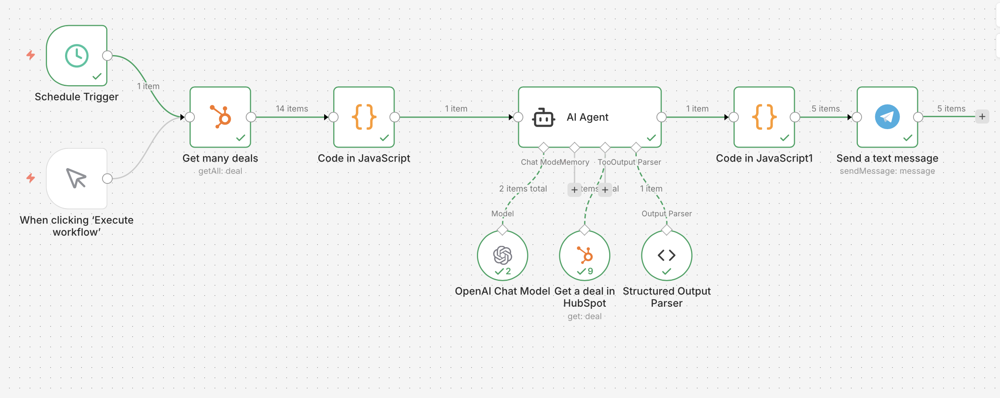
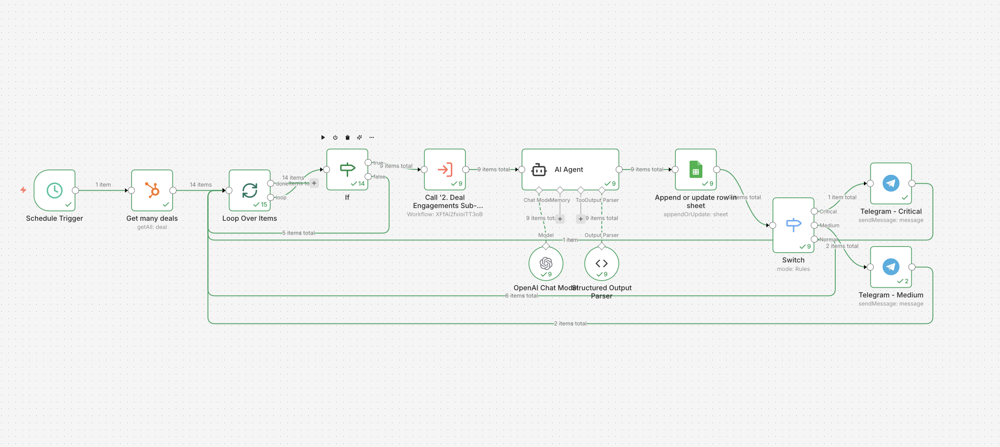
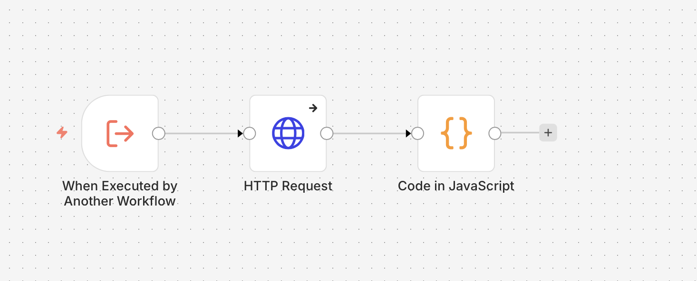
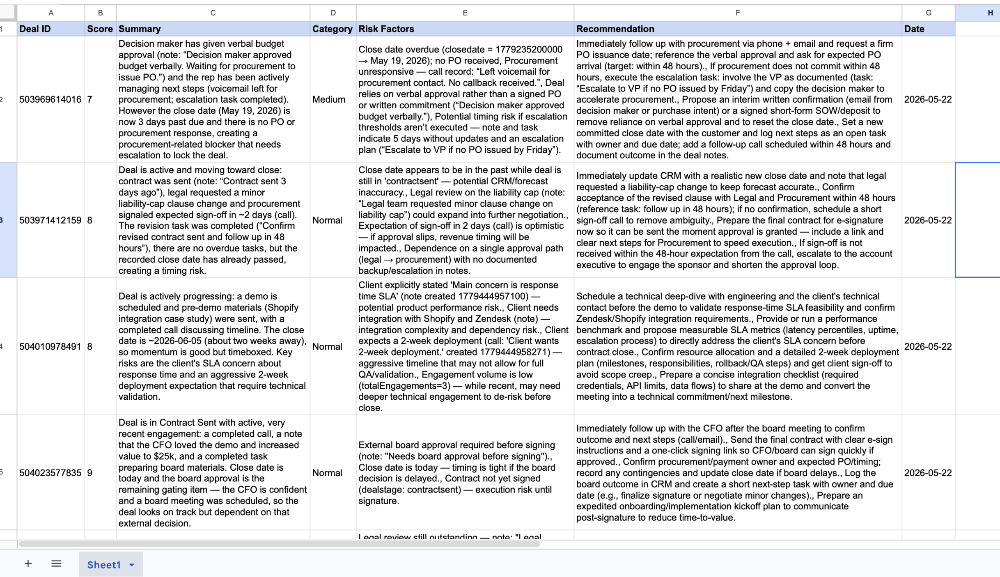
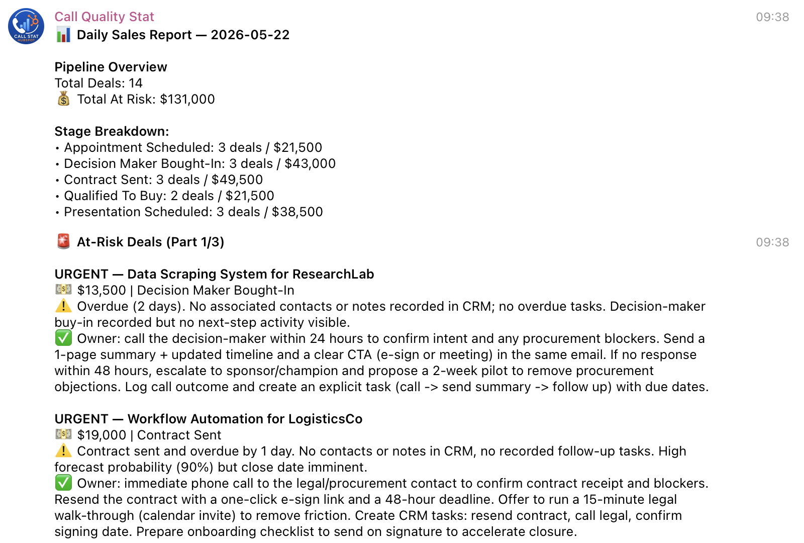
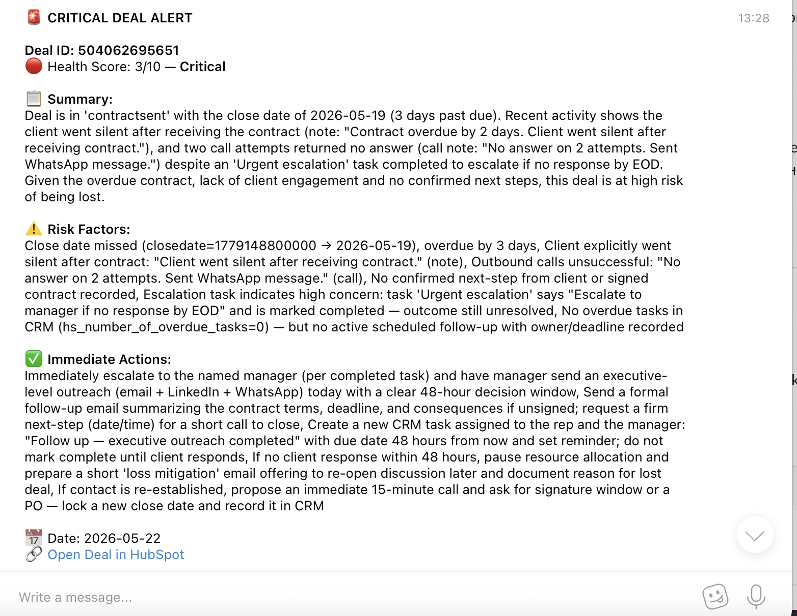
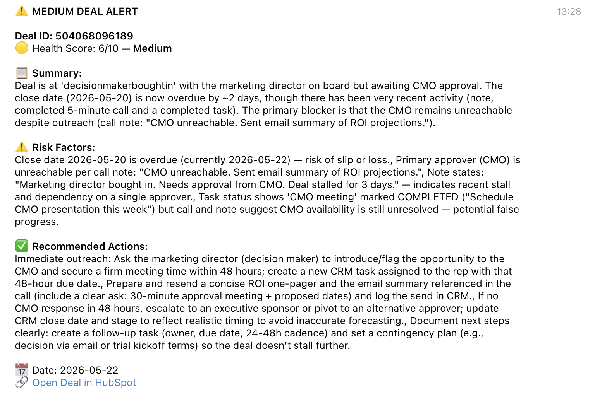
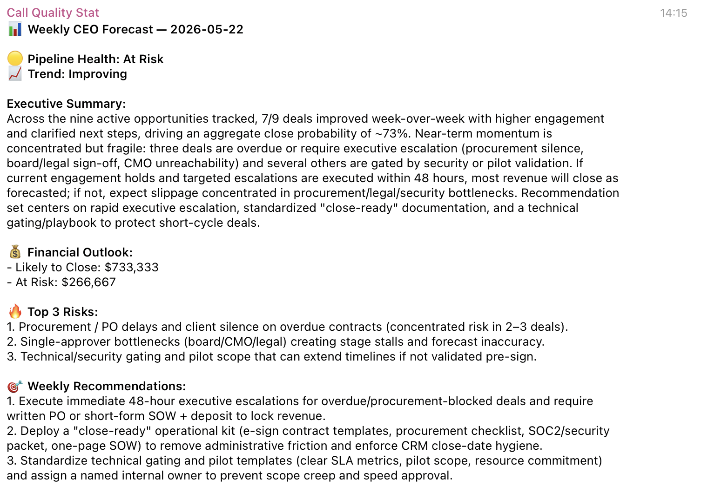

A 3-workflow AI automation system that analyzes a B2B sales pipeline daily, scores each deal’s health weekly, and delivers a strategic CEO forecast - all automatically via Telegram.
Context
An AI automation agency runs an active sales pipeline with 10-15 deals at any given time. Sales managers track deals manually, and leadership has no real-time visibility into risks, stalled deals, or weekly revenue forecasts. Every insight requires manual CRM digging.
Project Summary
| Type | AI Sales Intelligence System |
|---|---|
| Stack | n8n · HubSpot CRM · GPT-5 mini · Google Sheets · Telegram |
| Workflows | 3 (Daily Report · Deal Health Alerts · CEO Forecast) |
| Status | ✅ Built and tested |
| GitHub | Sales-Intelligence-System |
Problem
- Managers spend 30-60 min/day manually checking deal status
- Leadership has no automated risk alerts for stalled or overdue deals
- No weekly strategic forecast exists - decisions made on gut feeling
- Critical deals slip through the cracks without timely follow-up
Solution
Three interconnected n8n workflows that run automatically:
- Daily Sales Report - AI agent analyzes the pipeline and sends a prioritized Telegram report every morning
- Deal Health Alerts - Every deal is scored 1-10 weekly, stored in Google Sheets, and critical/medium alerts fire instantly to Telegram
- CEO Forecast - Friday evening strategic briefing with revenue projections, top risks, and weekly recommendations
Process
Part 1 - Daily Sales Report
- Schedule Trigger fires at 9:10 AM daily
- HubSpot API pulls all active deals with key properties
- Code Node aggregates data: stage counts, amounts, identifies stuck deals
- AI Agent (GPT-5 mini) receives summary, calls Get Deal tool for each at-risk deal individually
- Structured Output Parser returns clean JSON with priorities and recommendations
- Code Node splits message to respect Telegram’s 4096 character limit
- Telegram delivers formatted HTML report
Part 2 - Deal Health Alerts
- Schedule Trigger fires Monday 10:00 AM
- Loop Over Items processes each deal individually
- If Node filters only stuck stages: Presentation Scheduled, Decision Maker Bought-In, Contract Sent
- Sub-workflow fetches all engagements (notes, calls, tasks) via HubSpot Engagements API
- AI Agent scores each deal 1-10 with full JSON analysis
- Google Sheets stores results with Append or Update (no duplicates by Deal ID)
- Switch routes Critical (≤4) and Medium (≤7) deals to Telegram alerts
- Normal deals return to loop silently
Part 3 - CEO Forecast
- Schedule Trigger fires Friday 19:00
- Google Sheets pulls all accumulated Deal Health data
- Aggregate node collects all rows into single array
- AI Agent produces executive briefing: pipeline health, revenue at risk, top 3 risks, weekly recommendations
- Telegram delivers formatted CEO report
Results
- 100% automated pipeline visibility - zero manual CRM checking
- Critical deals flagged within minutes of weekly analysis
- 9 deals analyzed, scored, and stored in single workflow run
- Two-tier reporting: operational alerts for managers + strategic forecast for CEO
- Full audit trail in Google Sheets with historical scoring trends
Tech Stack
| Tool | Role |
|---|---|
| n8n | Workflow automation engine |
| HubSpot CRM | Deal data source + engagements |
| GPT-5 mini | AI analysis and scoring |
| Google Sheets | Analytics storage |
| Telegram Bot | Delivery channel |
Key Logic
AI Agent as investigator
In Part 1 the agent receives only deal IDs and calls the Get Deal tool itself for each problematic deal. It decides what to investigate - not the workflow.
Sub-workflow isolation
Engagement fetching is a separate workflow for clean debugging and reusability. If it breaks, it doesn’t take down the main workflow.
Switch node order
Critical → Medium → Normal. Order is critical: first match wins. Reversed order would route all deals to Normal regardless of score.
Append or Update
Google Sheets updates existing rows by Deal ID, never duplicates. Essential for accurate historical tracking across weekly runs.
JSON.stringify for AI input
All deal and engagement data passed to AI agents as stringified JSON, not raw objects. Prevents serialization issues and keeps token usage predictable.
Screenshots
Part 1 workflow canvas

Part 2 main workflow canvas

Part 2 sub-workflow canvas

Google Sheets with deal health data

Telegram - daily report

Telegram - Critical alert

Telegram - Medium alert

Telegram - CEO forecast
